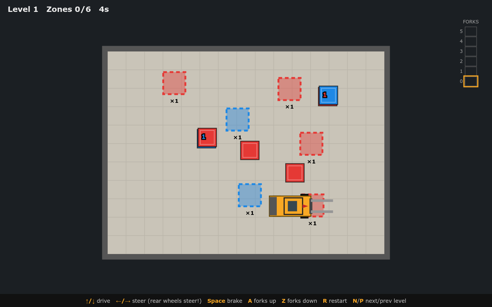
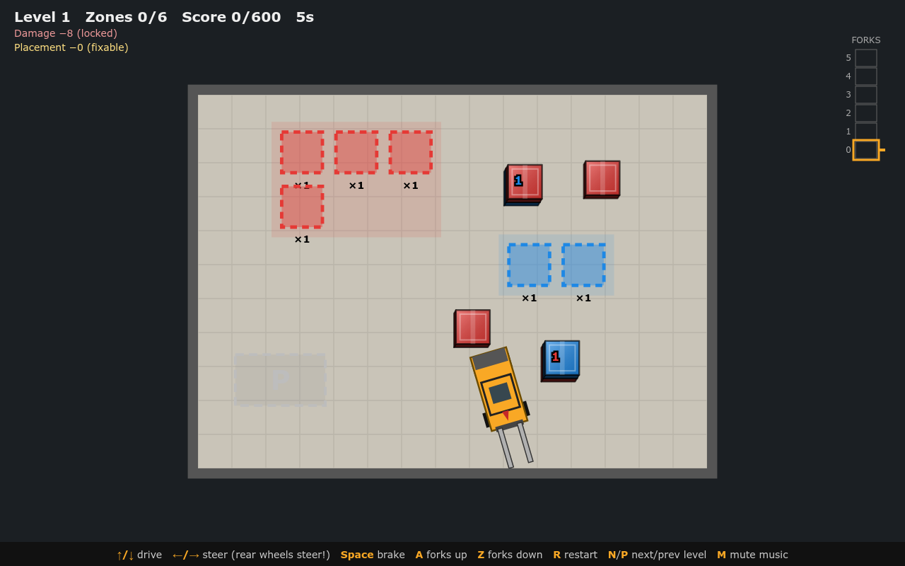
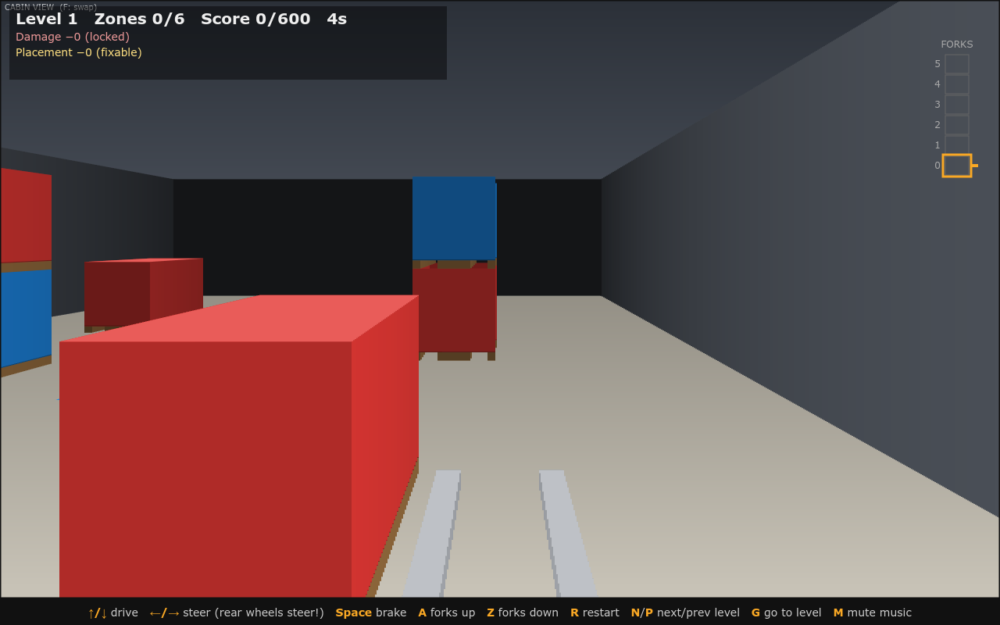
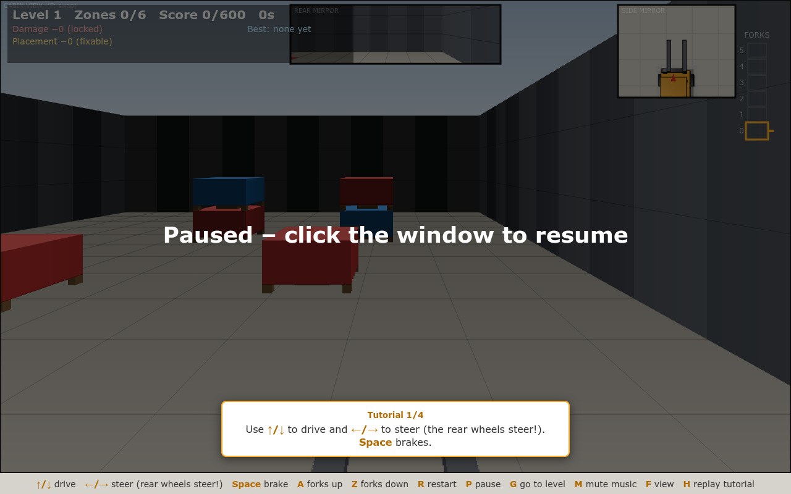
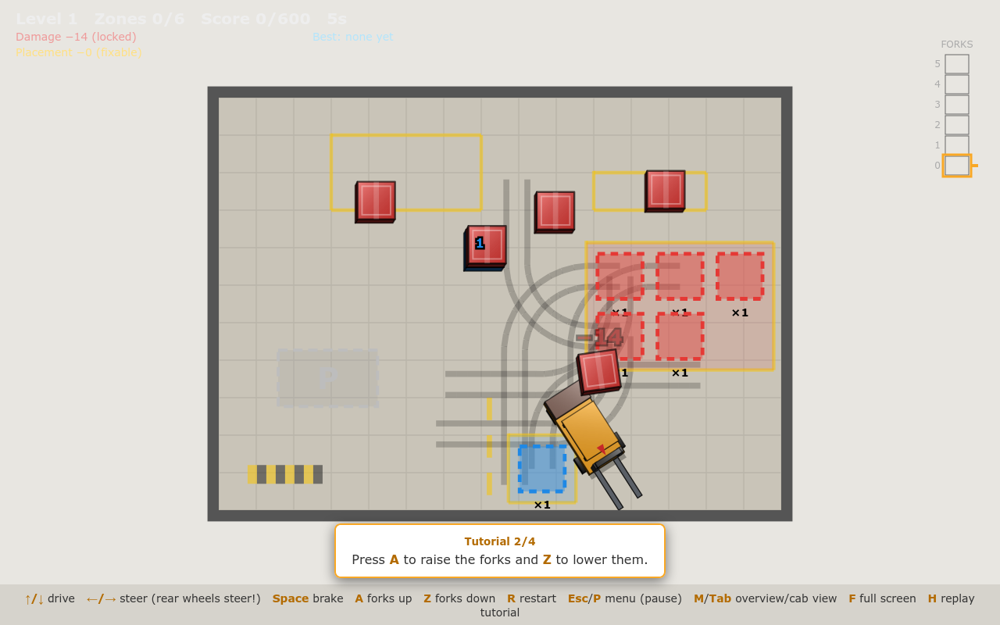
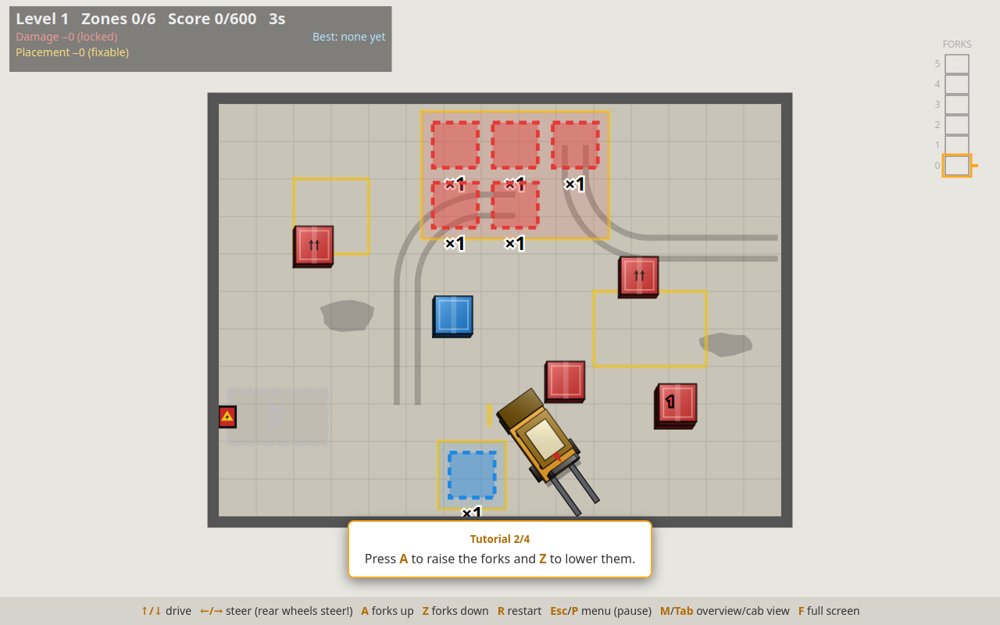
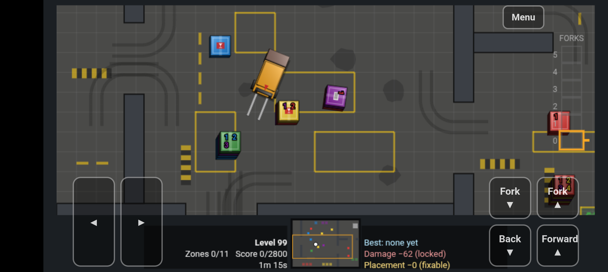
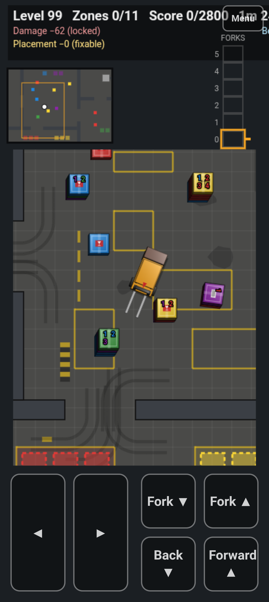
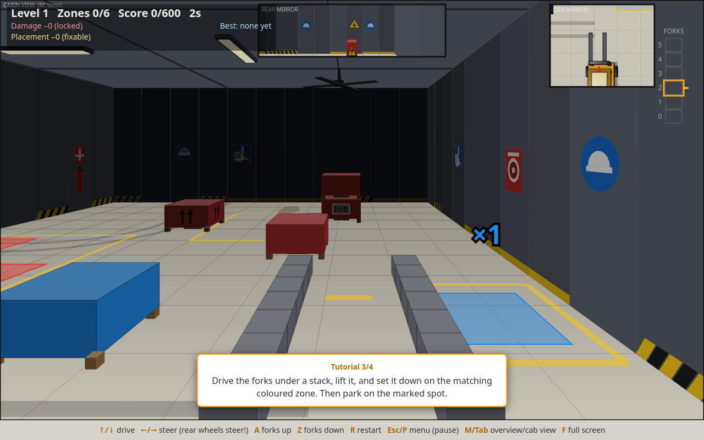

Forklift Frenzy
The development timeline of a top-down, keyboard-only forklift puzzle
21 – 27 October 2026 · 202 commits · vanilla JS + Canvas 2D · no build, no dependencies
← / → or Space to navigate
The idea & the stack
- Stack coloured boxes in matching drop zones, then park the forklift
- Rear-wheel-steering bicycle model: the tail swings out
- Deterministic seeded level generator (
mulberry32)
- DOM-free game logic, so tests run in plain Node
- Static files on GitHub Pages; Firefox is the primary target
~3.7klines of JS
0dependencies
5days of development
Day 1 · 21 Oct · Morning
Core mechanics: forks & stacks
- First playable browser game: forklift, boxes, zones, levels
- Fork heights went from half-steps to whole levels 0–5
- Tines never collide; the body and carried stack do
- Lowering a carried stack releases it at resting height
- Boxes rotate with the forklift and remember their rotation

First prototype (commit 6974f64)
Day 1 · 21 Oct · Midday
Rules, scoring & polish
- Per-box scoring: crash and squareness deductions (5° allowance)
- Parking spot; finishing needs parking and ≥ 50% score
- Procedural audio: engine whine, music, fork sounds, success chime
- Rebrand to “Forklift Frenzy”: splash screen, favicon, 3D boxes
- Custom level seeds, random-seed button
- Project docs: Copilot instructions and
CODE_GUIDE.md

After the graphical overhaul (ca4b8d9)
Day 1 · 21 Oct · Afternoon
Cabin (first-person) view
- Polygon-projected FPV with forks, pallets, zones and parking
- Occlusion clipping, lids, undersides and pallets open on all sides
- Camera follows fork height; rear-view and side mirrors
- Floor grid and wall textures; dark mode

First cabin view (e16cdf4)
Day 1 · 21 Oct · Evening
Onboarding & progression
- Nudging a box slowly squares it to the forklift
- Local high scores per level and seed; time penalty
- Pause on lost focus
- Step-by-step, action-dismissed tutorial
- Drop-off areas favour outer walls
Day 3 · 23 Oct
Hard mode & physics depth
- Pallets glide, split or get pushed when turning with forks inside
- Hard mode: tines collide with pallet runners; push torque turns boxes
- Boxes need 50% support or fall beside the stack; crooked towers
- Rooms-and-corridors level generator replaces random pillars
- Cab view rewritten as a polygon-projection renderer

Rooms-and-corridors levels (c328e96)
Day 3 · 23 Oct
Menus & feedback
- Escape menu: engine whine, music, restart, hard mode, go to level
- Full screen, mute-all, underlined keyboard shortcuts
- Parking spot shows the required heading arrow; random spawn
- Floating damage popups and a break sound
Day 4 · 24 Oct
Handling & factory atmosphere
- Height-based speed limit for raised forks
- Larger steering lock, tapered by speed (later no longer limited by fork height)
- Overview becomes the default view; view mode is remembered
- Floor decals: tire marks, yellow markings, windows, doors, signs
- Ceiling, factory lights, fans; walls raised to clear a 5-box stack
- Box decals;
?debug overlay with FPS and state

Floor and wall decals (aed730f)
Day 5 · 25 Oct
Sound & music
- Reversing beep and a blue reversing light that walls cut off
- Selectable music: generated tracks, then public-domain and CC0 MIDI songs with a drum synth
- Clearer MIDI voices (EQ, brighter instruments, tighter reverb)
- New music library: country, classical, industrial metal, techno and more, all CC0/public domain with quirky names
Day 5 · 25 Oct
Final touches
- Score explanations on splash and level-complete screens
- Level timer stops on completion; jump to lowest unscored level
- Debug overlay shows update/draw/idle share

Latest overview, with damage popups and tutorial
Day 5 · 25 Oct
On the phone: touch controls
- On-screen buttons, tap to continue, a zoomed follow-camera overview with a minimap
- Rotatable PWA: landscape layout with the field up top, steering bottom left, drive/forks bottom right, minimap and status between
- Brake removed: engine braking does the slowing; touch start goes full screen

Landscape: steering left, drive and forks right, minimap and status between

Portrait
Where it ended up: the cabin view

Latest cabin view: mirrors, decals, zone labels and damage popups (HEAD)
Commits per day
Stacking up the work: one box per commit
> 200 lines
50–199
10–49
1–9
0 lines
· taller box = more lines
Timeline at a glance
- 21 Oct – core game, scoring, audio, branding, cabin view, tutorial (~80 commits)
- 23 Oct – hard mode, stacking physics, room levels, menus
- 24 Oct – handling, decals, factory look, debug tools
- 25 Oct – reversing aids, music library, scoring UX, touch controls
- 26 – 27 Oct – landscape PWA layout, steering fix, brake removed, full screen on touch
21 · 22 · 23 · 24 · 25 · 26 · 27 Oct (no commits on the 22nd) · activity peaked on day 1, then ramped down to a few tiny tweaks by the 27th
Thank you
Built with vanilla JS, Canvas 2D and a lot of boxes.